Un plugin gratuit qui transforme ton Stream Deck en tableau de bord de pirate : minuteurs de cuisson qui sonnent avant que ça brûle, mégalodon AFK, heure en jeu, prévisions de la tempête, progression des commendations, gains de ta session… sans quitter le jeu des yeux.
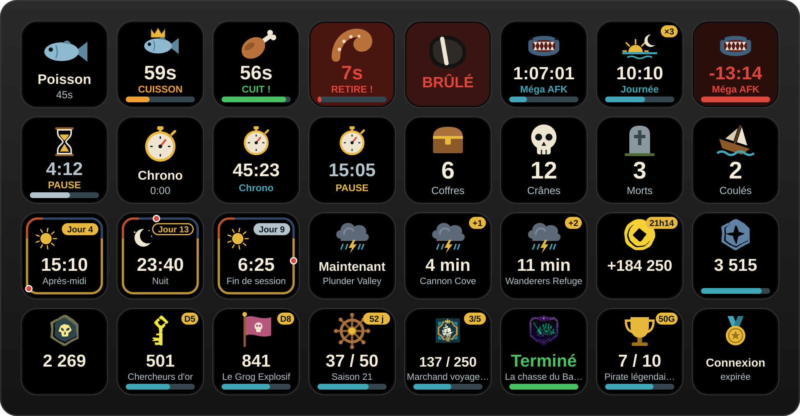
Aucune commande, aucun code : trois clics suffisent.
Clique sur le bouton doré Télécharger en haut de la page. Tu obtiens un fichier .streamDeckPlugin.
L'application Stream Deck s'ouvre et installe le plugin. Accepte si elle te demande une confirmation.
Dans la liste des actions à droite, ouvre la catégorie Sea of Thieves et glisse les actions que tu veux sur les touches de ton Stream Deck.
Chaque bouton se règle en le sélectionnant dans l'application Stream Deck. sans connexion fonctionne sur ton PC uniquement ; connecté va chercher des informations en ligne.
Pour ne plus jamais brûler un poisson ni oublier le mégalodon. Ils sonnent, clignotent et continuent même si tu changes de page.
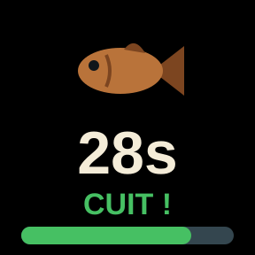
Poisson, trophée, poulet, porc, serpent, requin, kraken, mégalodon : le temps s'affiche, passe au vert quand c'est cuit et clignote en rouge avant que ça brûle.
Appuie quand tu poses la nourriture sur le feu.
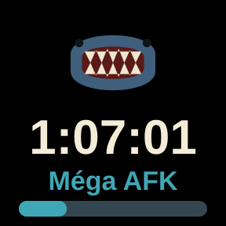
Mégalodon AFK (1 h 30), journée en jeu (24 min, en boucle avec le nombre de cycles) ou durée libre. Une fois fini, il compte le temps écoulé en négatif.
Appui court : démarrer / pause. Appui long : remise à zéro.
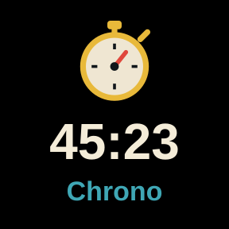
Un chrono simple pour mesurer un voyage, un combat ou ta session. Il survit aux redémarrages.
Appui court : démarrer / pause. Appui long : remise à zéro.
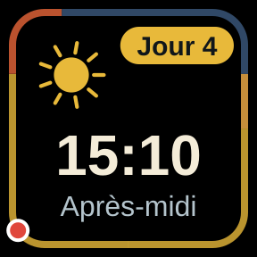
L'heure du jeu, le moment de la journée, et le contour du bouton qui sert d'horloge (point rouge). Compte aussi les jours passés en mer.
Appui court : démarrer le compteur de jours. Appui long : remise à zéro.
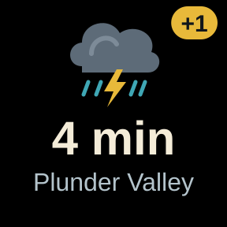
L'île où se trouve la tempête, ou l'une des 5 suivantes, et dans combien de temps elle y arrive. Prévisions de Merfolk's Lullaby.
Mets plusieurs boutons (+1, +2, +3) pour voir son trajet.
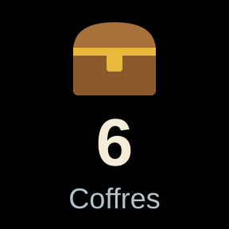
Coffres, crânes, morts, navires coulés… compte ce que tu veux pendant ta session.
Appui court : +1. Appui long : remise à zéro.
Ces boutons lisent ton profil sur seaofthieves.com : il faut d'abord connecter ton compte une fois.
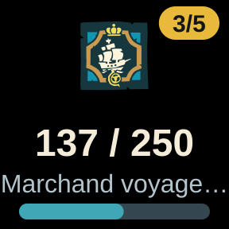
La progression d'une commendation, avec son image, son grade et la barre d'avancement.
Choisis faction → campagne → commendation. Appuie pour actualiser.
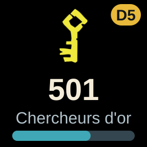
Le niveau, la distinction et la progression d'une compagnie, des Gardiens, des Serviteurs ou de ta guilde.
Choisis la faction. Appuie pour actualiser.
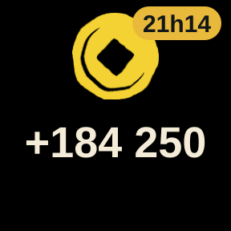
Ton or, tes doublons ou tes pièces anciennes : en total, ou ce que tu as gagné depuis le lancement du jeu (calculé automatiquement).
Choisis la monnaie et l'affichage. Appuie pour actualiser.
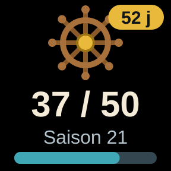
Ton niveau de renommée dans la saison en cours et les jours restants avant la fin.
Rien à régler. Appuie pour actualiser.
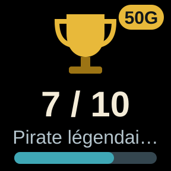
La progression d'un succès Xbox de Sea of Thieves, via le service tiers OpenXBL (clé gratuite à créer sur xbl.io).
Choisis le succès. Appuie pour actualiser.
Tous les réglages se font dans l'application Stream Deck, sans rien installer d'autre.
.wav pour la fin.Exemple : choisir une commendation en trois listes.
Exemple : la tempête n'a besoin que d'un choix.
Les boutons Commendation, Niveau de faction, Bourse et Saison lisent ton profil sur le site officiel. Rare ne propose pas de connexion pour les applications :
il faut copier une seule fois un « cookie » de ton navigateur, appelé rat. Ensuite, le plugin le garde à jour tout seul.
Ouvre seaofthieves.com dans Chrome ou Edge et connecte-toi avec ton compte Microsoft.
Appuie sur F12, puis va dans l'onglet Application → Cookies → www.seaofthieves.com.
Clique sur la ligne rat, puis copie le contenu de la colonne Valeur (Ctrl + C).
Dans les réglages d'un de ces boutons, colle-le dans Token RAT. Il sert à tous les boutons d'un coup.
Oui, entièrement : pas d'achat, pas d'abonnement, pas de publicité. Le plugin est open source, son code est consultable par tout le monde sur GitHub. Les services utilisés par certains boutons sont gratuits eux aussi : ton profil sur seaofthieves.com, les prévisions de Merfolk's Lullaby, et la clé OpenXBL (offre gratuite) pour le bouton Succès Xbox.
Le plugin ne touche pas au jeu : il ne lit ni ne modifie rien dans Sea of Thieves. Les minuteurs et l'heure en jeu sont calculés sur ton PC ; les boutons connectés lisent les mêmes informations que celles que tu vois sur ton profil du site officiel.
Non, pour l'instant le plugin est prévu pour Windows (Steam et application Xbox).
Non. Les boutons connectés ne demandent des informations que lorsqu'ils sont affichés, quand tu appuies dessus ou à l'intervalle que tu choisis. La tempête est actualisée toutes les 24 minutes, comme sur la carte de Merfolk's Lullaby.
Oui si tu as acheté quelque chose : le bouton Bourse affiche le bilan de ta session, achats compris. Le site met aussi ses chiffres à jour avec quelques minutes de retard.
Vérifie que l'option « Son » est activée dans les réglages du bouton et que le volume de Windows n'est pas coupé. Les sons partent avec environ une seconde de retard.
Télécharge la dernière version avec le bouton doré et double-clique sur le fichier. Tes boutons, leurs réglages, tes minuteurs en cours et tes compteurs sont conservés.
Ouvre un ticket sur la page GitHub du projet (bouton « New issue »), avec une capture si possible.